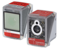
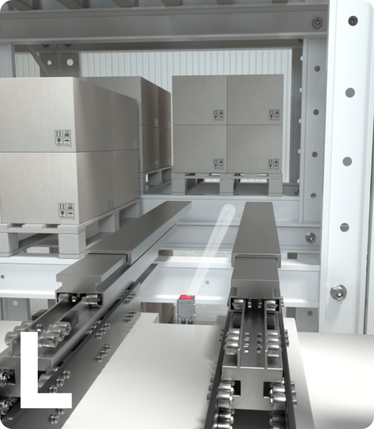

Sustitución tecnológica de fotocélulas tradicionales por visión artificial para el reposicionamiento automático en sistemas Mecalux.


Es un sensor de posicionamiento de alta gama basado en una cámara inteligente, diseñado específicamente para optimizar la interacción del transelevador con la estantería.
Corrige automáticamente errores de ubicación en el rack, asegurando una entrada y salida de palets fluida.
Capacidadde posicionamiento en 1ra y 2nd profundidad.